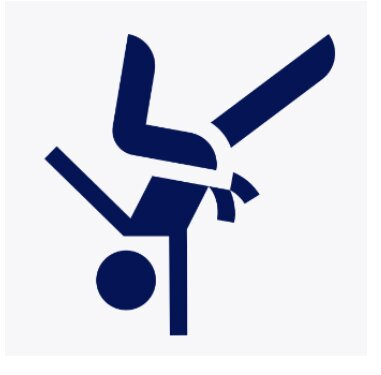

Judô
Arte marcial de combate que permite que o praticante use a força e o equilíbrio do oponente a seu favor, com princípios como respeito, autodisciplina e desenvolvimento pessoal.
Capoeira
É um tipo de luta de grande expressividade para a cultura brasileira que tem como principais características a defesa pessoal.
Jiu-jitsu

O jiu-jitsu é uma arte marcial de origem japonesa. Ela é voltada para o ataque e autodefesa corporais.Na prática do jiu jitsu se usa sempre a força e o peso do adversário contra ele.